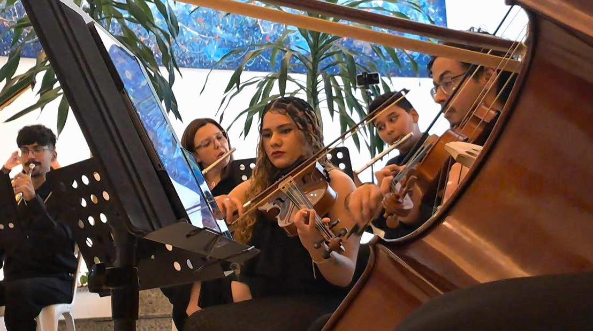
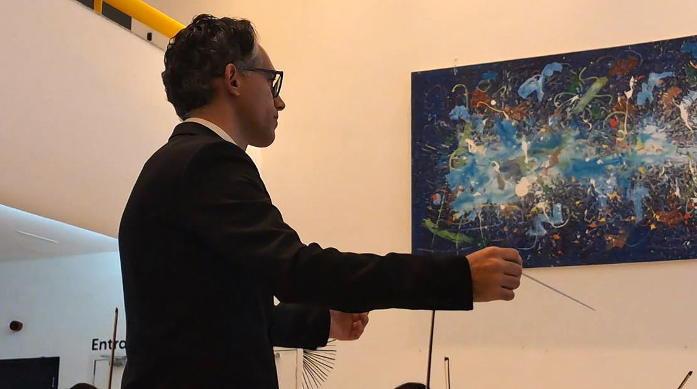
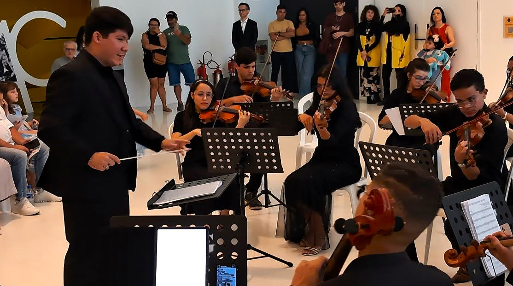
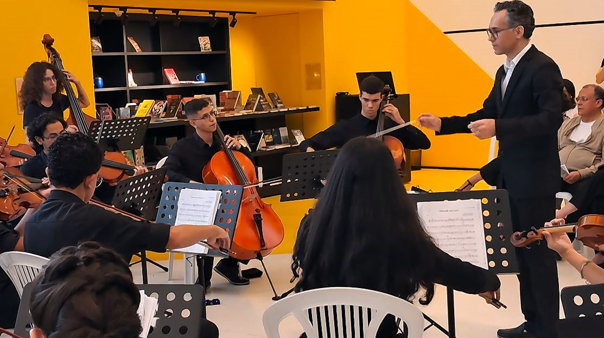

A Orquestra Jovem da UFCG se apresentou no dia 7 de junho no Museu de Arte e Ciência de Campina Grande (MAC). Com entrada franca, o concerto teve regência de Luís Passos e Joilton Freire , com obras de Villa-Lobos, Mozart e Piazzolla, além de músicas populares.
Criada em 2022, a Orquestra surgiu com a proposta de proporcionar prática orquestral aos alunos da extensão. Inicialmente formada por violinos, violas, violoncelos e contrabaixo, em 2026 passou a contar também com flautas, clarinetas e trompa.

Entre as obras apresentadas esteve Apollo et Hyacinthus , K. 38, de Wolfgang Amadeus Mozart , considerada a primeira obra operística do compositor. Mozart tinha apenas 11 anos quando a escreveu, em 1767, para uma representação na Universidade de Salzburgo. Inspirada no mito de Apolo e Jacinto, a composição pertence aos primeiros anos da trajetória musical do compositor.
O repertório avançou por diferentes períodos e linguagens com Libertango , de Astor Piazzolla . Composta e gravada em 1974, a obra tornou-se uma das peças emblemáticas do compositor argentino e tem no próprio título a combinação das palavras “libertad” e “tango”, associada à transformação de sua linguagem musical e ao desenvolvimento do chamado nuevo tango .

A Orquestra é conduzida pelo professor Luís Otávio Teixeira Passos , compositor e docente do curso de Música da UFCG. Com formação acadêmica em Composição no Brasil e nos Estados Unidos, Passos desenvolve atividades ligadas à criação musical, ao ensino e à prática orquestral. Em entrevista ao Paraíba ponto Cultural , destacou a participação de músicos da comunidade no projeto:
“São músicos que já tocavam seus instrumentos e viram na orquestra a oportunidade de trabalhar a técnica musical e o repertório específico de orquestra.”
Na apresentação no MAC, Passos dividiu a regência com Joilton Freire , aluno da graduação em Música e integrante da Orquestra Jovem. Freire também participa do trabalho de formação do grupo, auxiliando nas aulas de violino e nos ensaios de naipe.

A realização do concerto no MAC também dialoga com a proposta do Museu de atuar como espaço para diferentes manifestações culturais. Desde sua reabertura, o equipamento vem desenvolvendo exposições, programas e eventos e buscando fortalecer sua relação com a comunidade e com instituições de ensino de Campina Grande.

A agenda de apresentações da Orquestra Jovem terá continuidade no mês de julho, com sua participação na programação oficial do XVII Festival Internacional de Música de Campina Grande (FIMUS) . O grupo se apresentará no dia 11, no Teatro Municipal Severino Cabral, integrando a série Jovens Talentos .